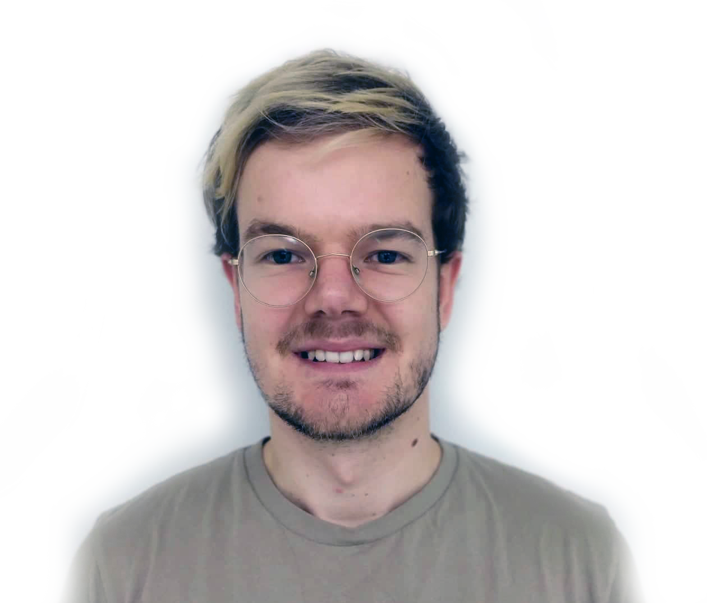
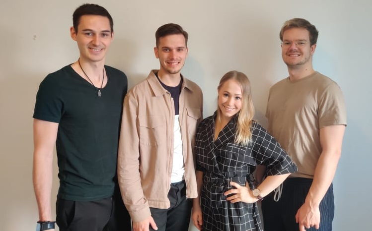
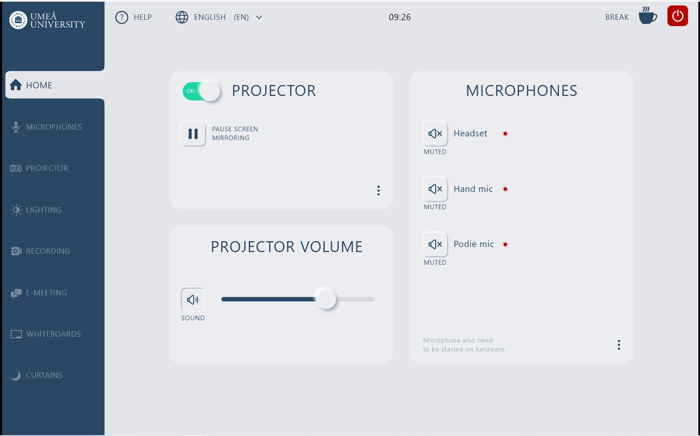
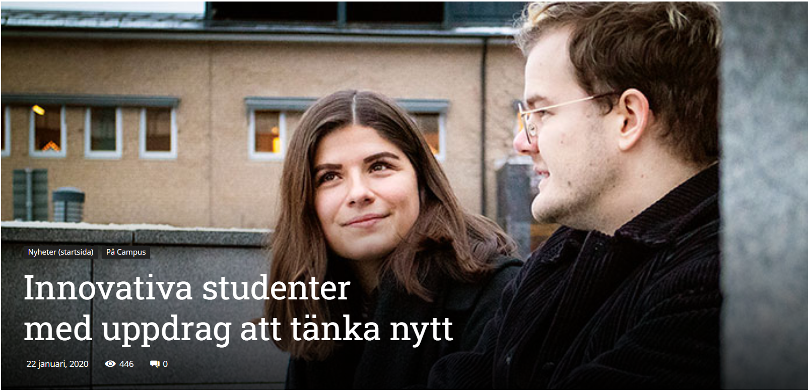
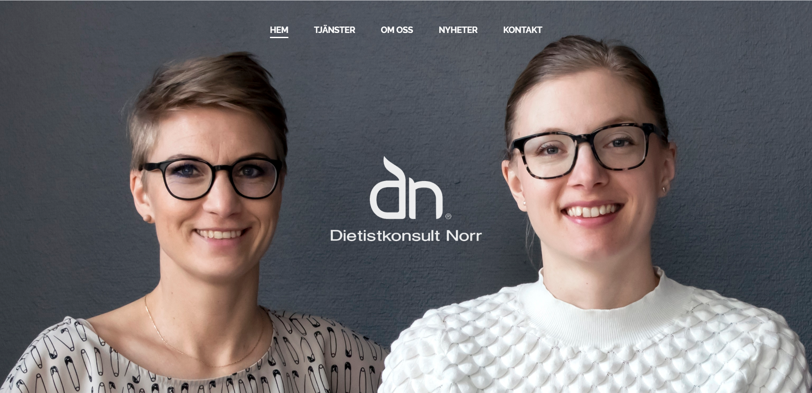

Hi!
I'm Joel Bystedt, a design addicted, passionate, outside the box-thinker, ambitious, tech enthusiastic, and creative guy looking for a career.
Feel free to contact me at joel.bystedt@gmail.com


A couple of years after Swedish gymnasium, I found out what careeer I wanted to pursue. In Umeå they have one of Sweden's best M.Sc.Eng programs in interaction and design. So I went there.
It was the education of my dreams. It combines my two biggest passions, technology and design.
So far, I've been able to pass all courses within the given timeframe, and I aim to graduate
in 2022. Apart from my studies, I've participated in many extracurricular activities.


As one of the founders at a green-tech startup in Umeå, one of my responsibilites was to oversee and lead the engineering design process. This included building the website, design high and low-fidelity prototypes, and in overall create the brand.

As a project manager for the university's building office, I work with a team of 5 students in an iterative process to design new user interfaces for the university's lecture halls

As an innovation ambassador, I am part of a team that reviews, improves, and reports on services that Umeå Energi handles or develops. Together with ten other students in different fields, we develop innovative solutions for decision makers at Umeå Energi.

As a web developer, I work with user experience design in Wordpress to improve the usability of the website and optimize the company's search results (SEO).